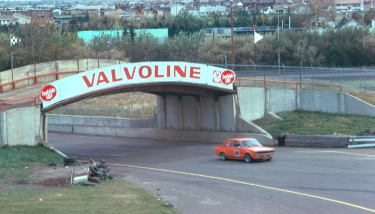

Return to racingcircuits.net's Photo Archive Main Index
Edmonton - Green Bank to Pit Entrance
|| Contents | Chevalier Straight and Pit Complex | Parker's End to Meldau | Green Bank to Pit Entrance || Home ||
Return to racingcircuits.net's Photo
Archive Main Index

Green Bank to Taylor Turn

Straight after Taylor Turn

Bridge to Paddock

Bridge

Panoramic view of the last corner
All photographs ©Fred Young. Reproduced here with kind permission.